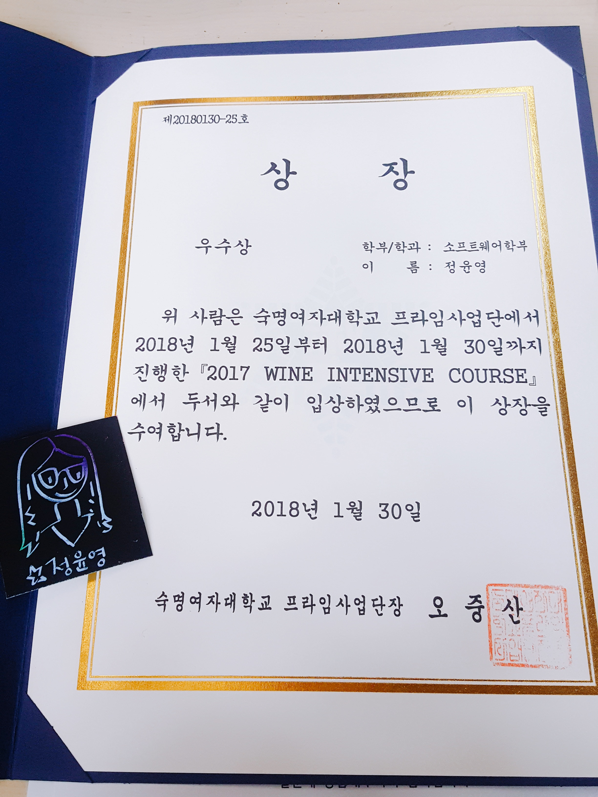
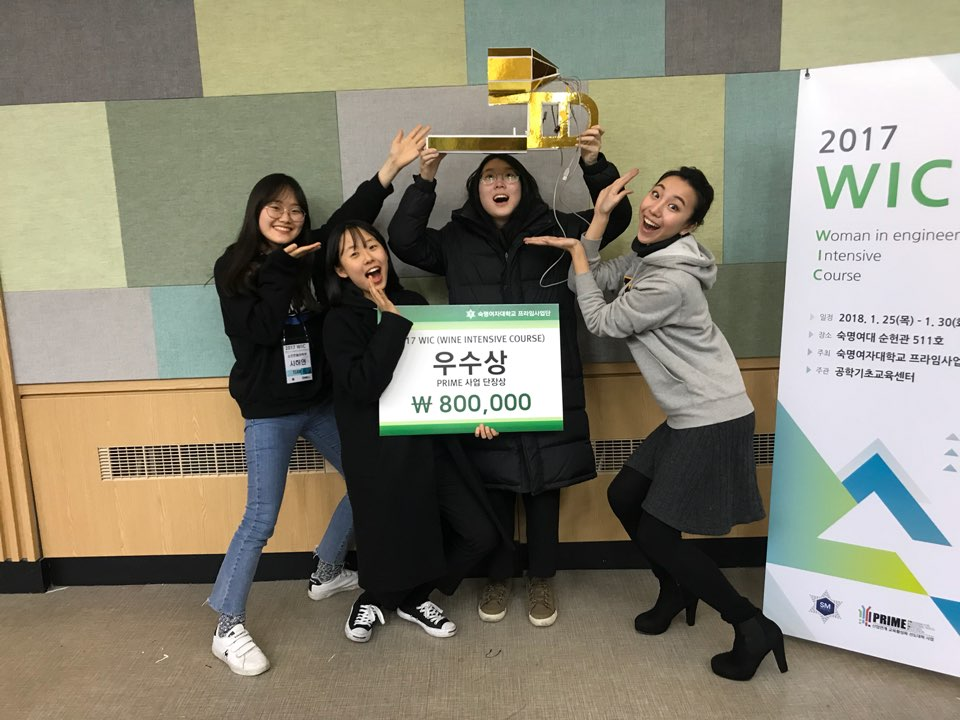
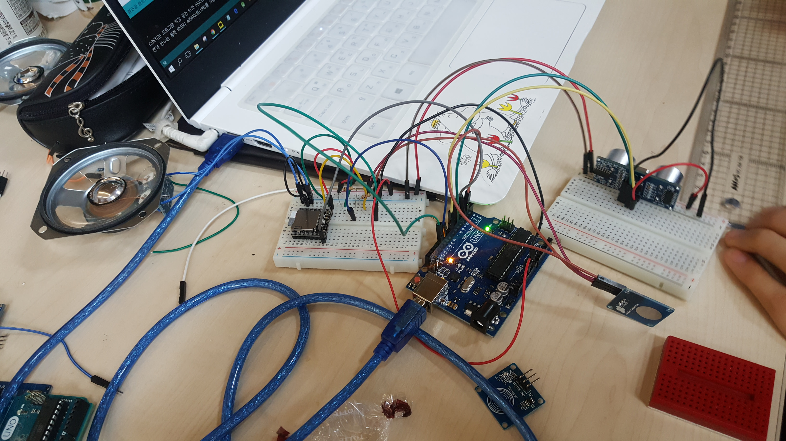

WIC(Wine Intensive Course)는 인문사회계열, 디자인계열, 공학계열 학생들이 4인 1팀으로 팀을 이뤄
4차산업혁명과 관련된 성과물 제작에 필요한 핵심강의를 듣고, 무박2일간 팀웍을 발휘하여 무한상상, 장의의
세계를 펼치는 과정입니다. 저는 그 마무리 과정인 해커톤에 참가했었습니다. 무박 2일로 진행되며 여러 과의
학생들이 한 팀이 되어 2일동안 개발한 작품을 발표했습니다. 처음으로 경험한 팀프로젝트, 해커톤이 었고
같이 협업하며 많은 점을 느낄 수 있었습니다. 더불어 저 자신의 역량도 점검할 수 있었고 앞으로 제가 미래를
선택하는데 있어 도움을 주었던 활동입니다. 운이 좋게도 우수상을 탈 수 있어서 더욱 값진 경험이었습니다.
|  |  |
|  |